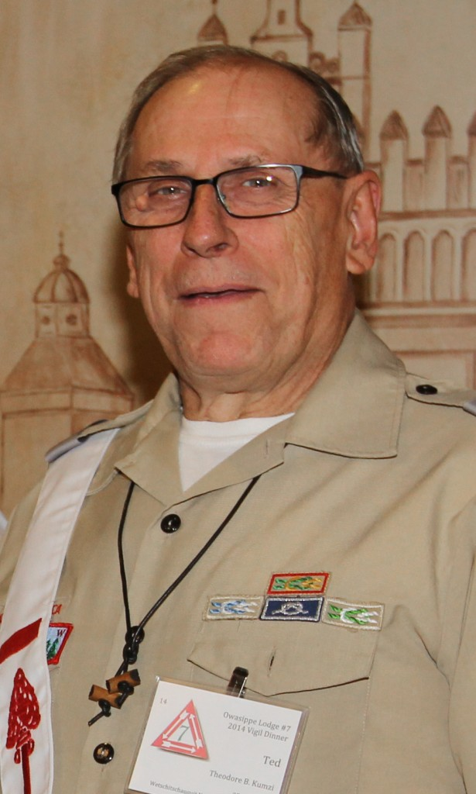

Gerald H. Blake
Achewon · Strong One
Lodge Chief 1932

Sheridan U. Nunn
Lodge Adviser 1968–1979
Centurion Award

Ronald J. Temple, Ph.D.
Elachtoniket · The Seeker
Lodge Chief 1959–1960

John C. Kosik
Lodge Chief 1977
Centurion Award

Francis J. Podbielski, MD
Wischiki · Busy One
Centurion Award

Robert C. Landmichl
Lodge Chief 1981
Centurion Award

Theodore B. Kumzi
Lodge Adviser 2000–
Centurion Award